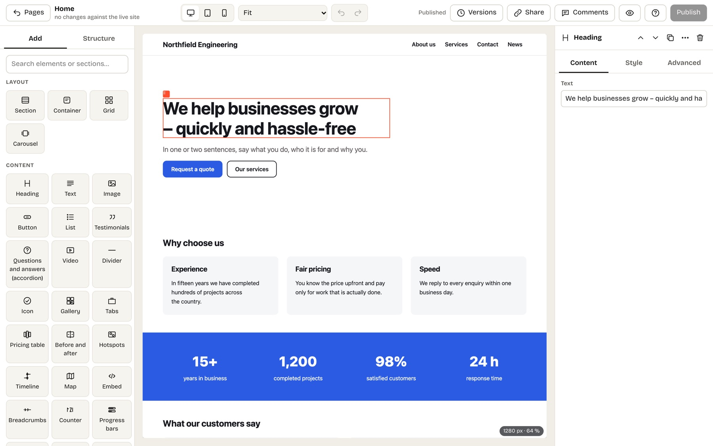
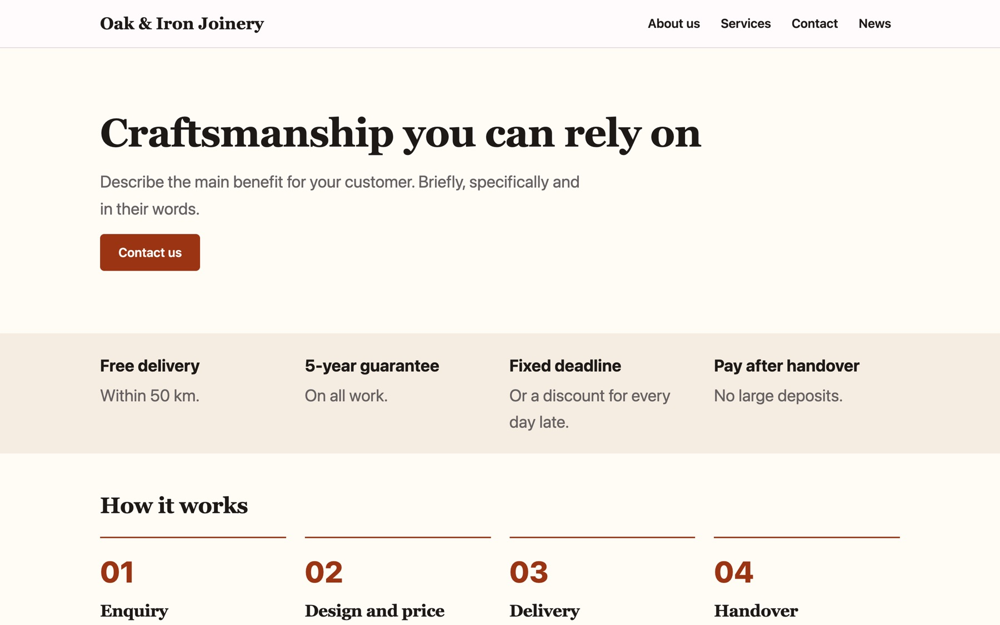
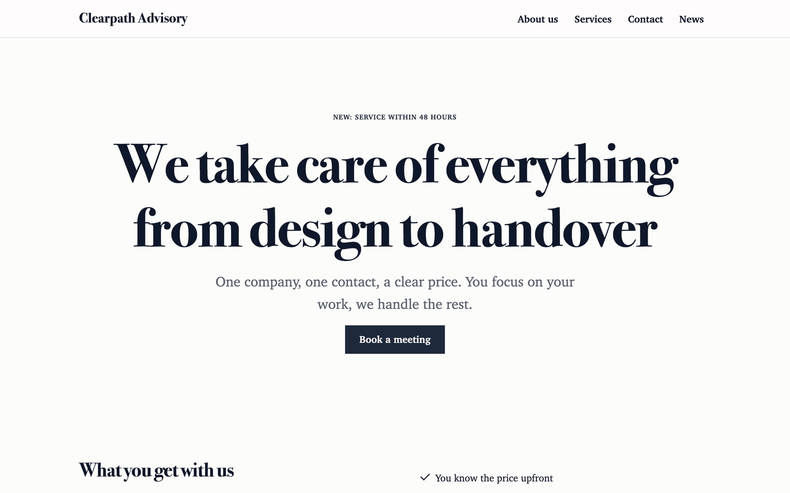
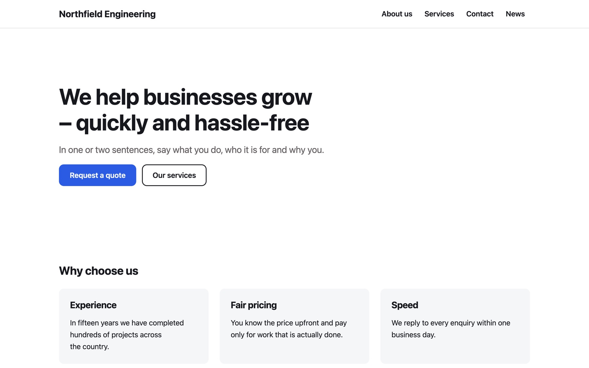
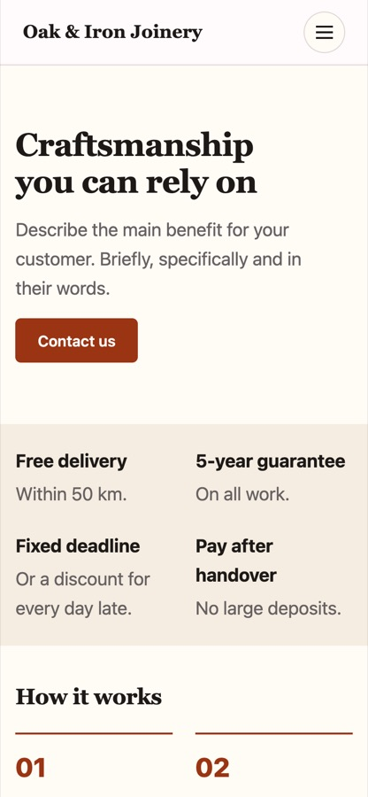
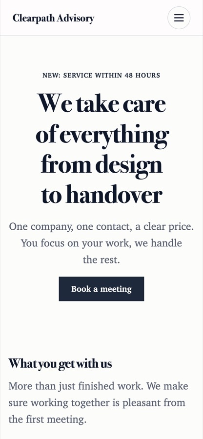
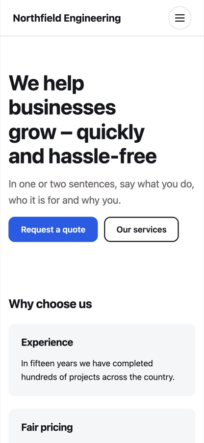

Appointments
Visitors pick a free time. Confirmations and reminders go out by e-mail.
Website builder for your own server
Talea comes with finished designs, editing right on the page and bookings, forms and a newsletter built in. It runs on your server, so the site and its data stay with the business.

Looks
Each of the 14 looks sets colours, fonts, header and footer. You try a look on your own pages before you apply it, and changing the brand colour later restyles the whole site.



Editing
They click a headline on the page and type over it, and drag a photo in from the desktop. Phone and tablet are one click away. The design lives in shared styles, so a new text leaves the layout alone.
You decide who may publish and who only writes drafts. Every published page keeps its last 20 versions, and anything deleted waits in the trash for 30 days.



Built in
There are no plugins to choose or to patch. Everything below is part of Talea, and most of it can be switched off when a site does not need it.
Visitors pick a free time. Confirmations and reminders go out by e-mail.
Forms with steps and conditions. Spam is filtered without a puzzle for the visitor.
Sign-up with confirmation and issues in the look of the site.
Customers sign in with a link sent by e-mail.
Counted without cookies.
Address and opening hours from the company details become structured data.
Language and regional versions of the site, right to left included.
Posts with categories, scheduling and versions.
Upkeep
An update is a new container image, and database changes apply before the site starts. Code cannot be uploaded through the admin, and backups go to FTPS or S3 on a schedule. One installation can run many sites, each with its own people and rights.
AI
Claude and other assistants connect over MCP and can do what the editor can, with the same checks. For each connection you choose whether the assistant may publish or only writes drafts with a preview link. A whole session can be undone for 30 days.
Add a page for our kitchen fitting service, with a form that asks for the room size and a budget.
The page is ready as a draft. Here is the preview link. I left two gaps for you: the starting price and a photo of a finished kitchen.
Owning
| Renting a website | Running Talea |
|---|---|
| A monthly fee for as long as the site exists | Free software. You pay for the server. |
| The content lives on the provider’s servers | The content lives on yours. |
| You export what the provider allows | You export everything in an open format. |
Questions
Yes, on the page itself. You give each person exactly the rights they need, from writing drafts to publishing.
No. Forms, bookings and a newsletter are built in.
Whoever installed it pulls a new image. There are no plugins with updates of their own.
Yes. Talea exports the whole site as an open archive that another Talea installation, or your own code, can read.
You can show products with prices and variants and collect order enquiries in a basket. Checkout and payments are not built in.
The business keeps its site, its customer data and its costs in its own hands.
Origin
Talea started in October 2026 as a fork of Kaleta 3.7.0, a CMS for business websites by Miroslav Kaleta and contributors. The page builder, the design system, bookings, forms, the newsletter, collections and the AI connection came with Kaleta. Talea keeps the whole history and has gone its own way since.
| Kaleta 3.7.0 | Talea 4.1.0 | |
|---|---|---|
| Installation | A ZIP upload to PHP hosting | One container image |
| Updates | Installed from the admin | A new image, pulled on the server |
| Databases | MySQL or MariaDB | MySQL, MariaDB, PostgreSQL or SQLite |
| Finished looks | None, on purpose | 14, tried on your own pages first |
| Sites per installation | One | Several, each with its own people and rights |
| Names in the code | Czech | English, with Czech as one of the translations |
Talea also adds a library of about 28 self-hosted fonts, layout by dragging on the page, a setup assistant and an Ask box that use the owner’s own AI key, A/B tests, members-only pages and search-engine markup in the builder. It drops the updater inside the admin and the whistleblowing module. Changes in Kaleta after the fork are read and rebuilt in Talea, so far through Kaleta 3.11.0. If you want PHP hosting with updates from the admin, Kaleta fits better. The full list is in the README.
Install
Talea runs as one container next to a database. After the commands, the setup in the browser asks for the site name and the first administrator.
curl -O https://raw.githubusercontent.com/czepter/taleacms/main/docker-compose.yaml
echo "TALEA_DB_PASSWORD=$(openssl rand -hex 16)" > .env
docker compose up -d
# then open http://localhost:8080